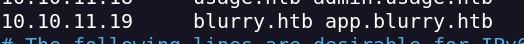
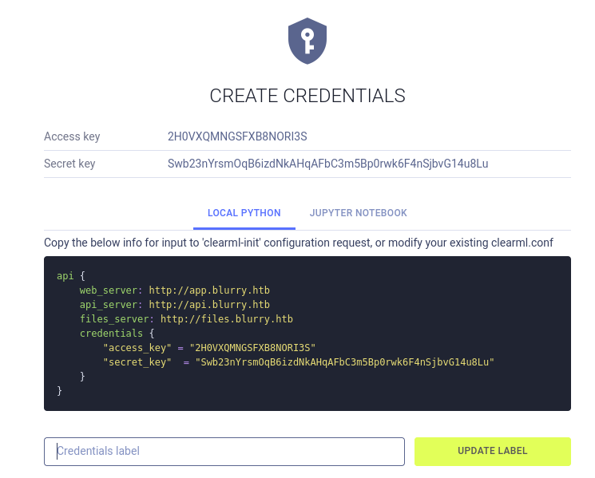
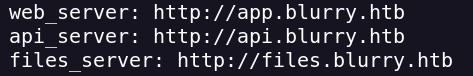
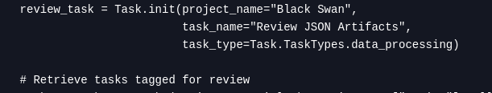
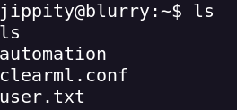
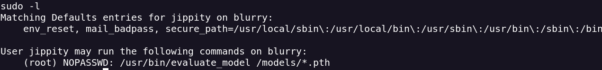
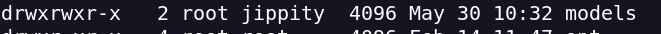
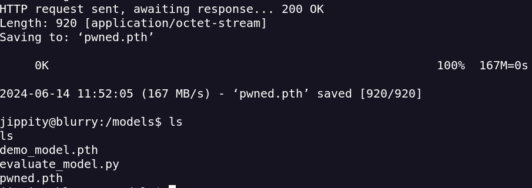
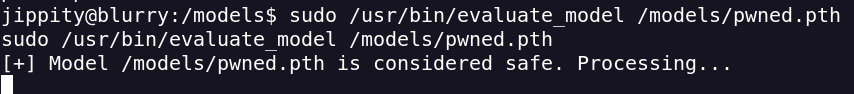
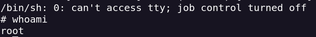

I started with a port scan against the target to identify exposed services. The scan revealed two open ports: port 80 running HTTP and port 21 for SSH access. When browsing the web service on port 80, the application redirected me to a specific subdomain, which I added to my local hosts file to ensure proper name resolution during further testing.

While exploring the web application, I discovered a functionality that allowed the creation of new credentials. Submitting any arbitrary username resulted in immediate access as a developer user. This access level was sufficient to interact with the ClearML platform, which required local configuration using the credentials provided by the application.

ClearML is an MLOps solution used to manage and execute machine learning models. After installing and initializing ClearML locally, I configured it using the details obtained from the application. During this process, I encountered an issue caused by missing subdomains, which needed to be properly added to ensure correct communication with the ClearML services.

While researching potential vulnerabilities affecting ClearML, I identified a relevant issue: CVE-2024-24590: Pickle Load on Artifact Get. This vulnerability allows the execution of arbitrary code through a malicious Pickle file when an artifact is downloaded. Understanding how an administrator would retrieve and execute artifacts was critical, as this behavior would directly trigger the payload.

Additional technical details from public research confirmed that this vulnerability could be abused to craft a malicious artifact containing a reverse shell payload. A detailed explanation of this attack vector can be found in the following research article: https://hiddenlayer.com/research/not-so-clear-how-mlops-solutions-can-muddy-the-waters-of-your-supply-chain/ . After preparing and uploading the malicious artifact to the project, I executed the exploit and successfully obtained a reverse shell as a low-privileged user.

To identify possible privilege escalation paths, I checked which commands could be executed with elevated privileges.
sudo -l
The output revealed a script that searches for files ending in .pth inside the models directory, removes malicious code, and then executes them. Importantly, I had write permissions on the models directory, making this a viable escalation vector.

To abuse this behavior, I needed to install the torch library in order to generate a compatible model file. Once installed, I created a malicious model file and uploaded it to the target system within the writable directory.

Finally, I executed the allowed sudo command, which processed and ran my malicious model file.

As a result, I obtained a reverse shell with root privileges, successfully completing the compromise of the system.
